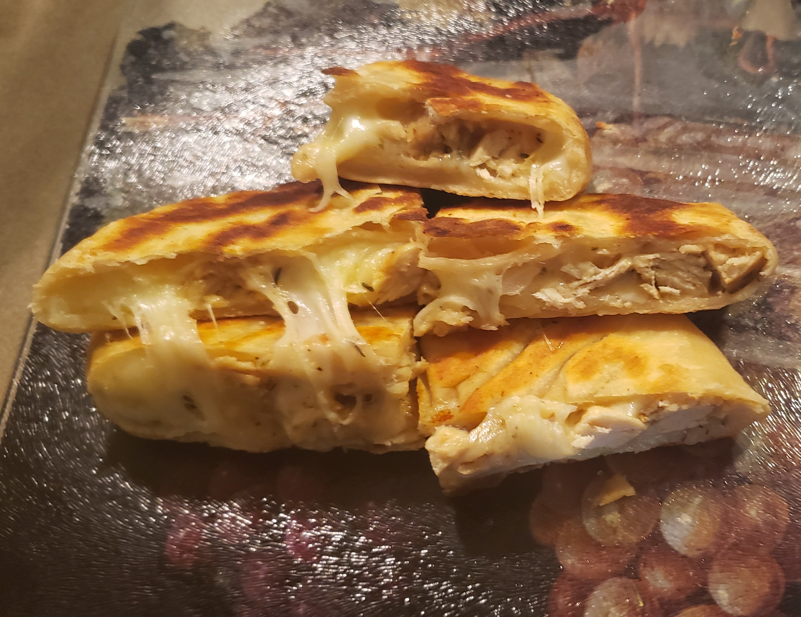

Hobbies
Cooking
Cooking is my main hobby. I usually stick to stovetop cooking but I also love to grill and bake. The picture on the right is some stuffed flatbread It being one of my favorite things to cook along with doing bbq I enjoy cooking since it is a great way for me to relax after a long day. And it is not only something that I enjoy but other people are also able to enjoy the food.
Modeling

Modeling is another one of my hobbies. I mainly model military vehicles, such as tanks, planes, and jets. It takes a good bit of time however I love putting them together and seeing the progress I make with them One of the first models I completed is on the left is the British Comet 2 that was in service in late WW2. Now I have built and hand painted 25 models and am currently building the M10 Wolverine, another British tank during WW2.